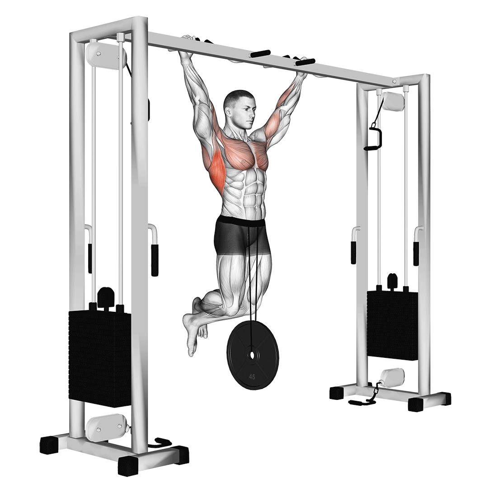
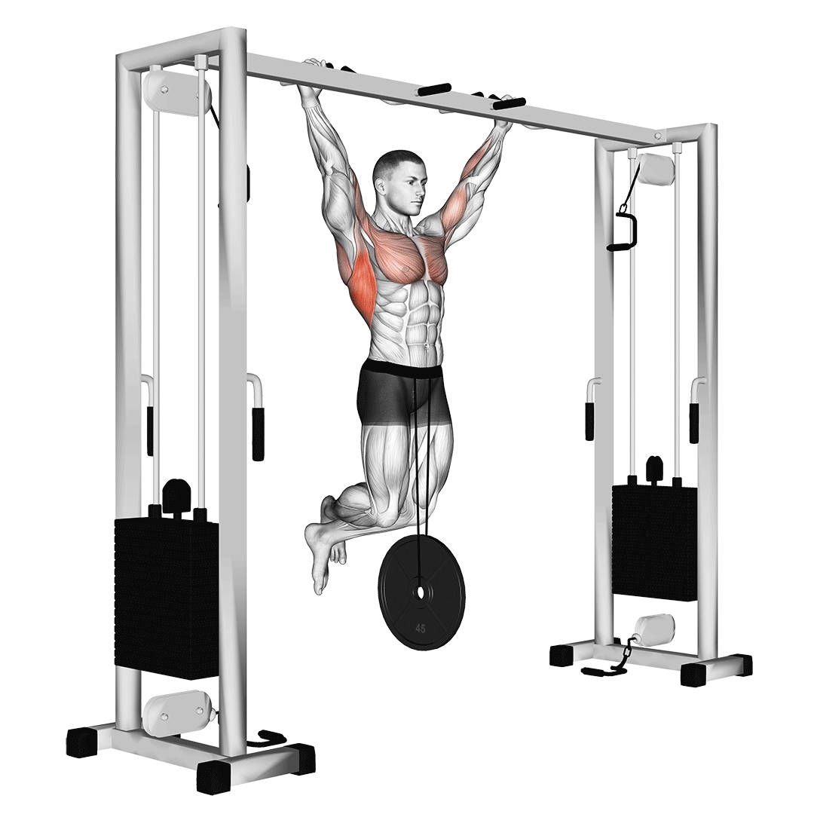
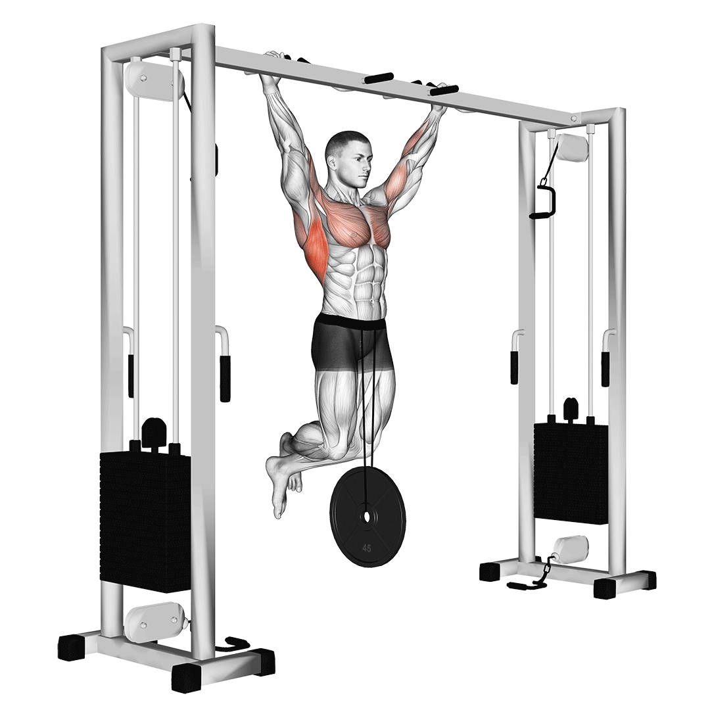

Weighted pull-ups are a strength-training exercise in which you wear weights while performing a standard bodyweight pull-up.
A weight belt or weighted vest supplies the added weight during the exercise, and this additional weight helps you build even more muscle during your pull-up workout.
Weighting a pull up allows you to add additional mechanical tension to the muscles, which is the basis for muscular growth and provides a way of training more effectively for strength and size.
It's also a way of providing variety to your training.
Weighted pull-ups are a great exercise for building muscle and increasing upper-body strength. If you do not have access to a weight belt or weighted vest,
you can perform weighted pull-ups using resistance bands, dumbbells, kettlebells, a barbell, or a dip belt outfitted with barbell plates.

3 Benefits of Weighted Pull-Ups
1. Weighted pull-ups improve core strength.
When performed properly, weighted pull-ups offer added intensity to activated core muscles.
2. Weighted pull-ups can help you achieve defined back muscles.
Weighted pull-ups intensify the activation of your back muscles—such as your rhomboids and trapezius muscles—giving your back muscles more definition.
3. Weighted pull-ups are a great exercise for a variety of athletes.
The range of motion and grip strength required for weighted pull-ups can help improve the performance of rock climbers, gymnasts, and bodybuilders training for weightlifting.
How to Do Weighted Pull-Ups With Proper Form
For weighted pull-ups, begin by performing 2–3 sets of 5–10 repetitions.
Choose your weight, sets, and repetitions based on your ability to maintain good technique throughout all sets and repetitions.
1. Stand on a plyometric box or a secure flat bench.
Place a pull-up belt around your waist with the appropriately sized weight plate. Grab the pull-up bar with a full overhand grip. Your grip should be about shoulder-width apart or slightly wider than your shoulders.
2. Step off of the box and achieve a dead hang position by allowing your legs to hang.
Your arms and legs should be long. Your elbows should be slightly bent. Squeeze your glutes and quads. Engage your core. Your ribs should be down and your pelvis should be slightly tucked.
3. Rotate your shoulders outward to engage your lats.
Your shoulder blades should be upwardly rotated away from your spine. Your chin should remain tucked throughout the movement, as if you were holding an egg under your chin. All repetitions should begin from this starting position.
4. Initiate the upward movement
by simultaneously pulling your shoulder blades down and pulling your elbows towards your body. Continue to pull your shoulder blades toward your spine and squeeze your upper back and lat muscles until your collar bone reaches the pull-up bar. Pause at the top position of the movement.
5. Begin the downward movement
by simultaneously straightening your arms and allowing your shoulder blades to upwardly rotate and move away from your spine. Slowly lower yourself back to the starting position. Your arms should be long with a slight bend in your elbows. Your shoulder blades should be away from your spine.
6. Repeat
the weighted pull-up for your desired number of repetitions.
 
